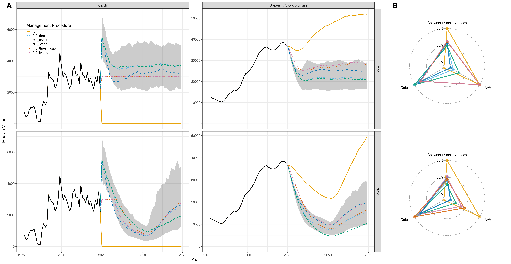

Testing Management Procedures via Closed Loop Simulations (Dusky Rockfish)
p_single_region_dusky_alt_mp_testing.RmdOverview
We demonstrated how closed-loop simulations can be run in the Run Closed Loop Simulations vignette. For an introductory walkthrough, please refer to that vignette. Here, we demonstrate how to test multiple management procedures (MPs) across different demographic scenarios to evaluate the robustness and performance of alternative strategies. We note that this is one way to define a closed-loop simulation. Users can maintain flexibility in how the closed-loop is set up, for example by defining MPs using empirical control rules, alternative reference points, or custom projection strategies. This approach allows users to tailor the simulation to their specific management questions or data constraints.
In this vignette, six MPs will be evaluated:
-
f0 – No fishing, serving as a baseline for
comparison.
-
f40_thresh – A threshold control rule using
and
as reference points.
Fishing mortality is set at when and declines linearly as falls below .
No fishing occurs if .
This rule represents the default strategy used for Gulf of Alaska Dusky Rockfish management (Omori et al., 2024).
-
f40_const – A constant fishing mortality rate fixed
at
,
regardless of
.
-
f40_steep – Similar to f40_thresh,
but with a steeper ramp, where the target biomass reference point is set
at
.
-
f40_thresh_cap – As in f40_thresh,
but with catches capped at 3,000 t, approximating the mean of the
historical catch time series.
- f40_hybrid – A hybrid rule combining elements of f40_thresh, f40_steep, and f40_thresh_cap.
Two demographic (recruitment) scenarios will be evaluated:
-
rand – Recruitment is randomly resampled from the
historical time series to mimic past recruitment variability.
-
crash – Recruitment follows Beverton–Holt dynamics
and declines sharply to mimic environmentally driven recruitment
collapses.
During the first 23 years of the simulation period (2025–2046), recruitment is simulated at reduced values
(), followed by a recovery phase (2047–2074) with higher productivity
().
The performance metrics evaluated in this vignette include:
- Spawning stock biomass
- Catch
- Average annual variation in catch
Let us first set up the simulation by loading the requisite packages and data files.
library(parallel)
library(foreach)
library(doParallel)
library(ggplot2)
library(here)
library(SPoRC)
library(ggradar)
data("dusky_rtmb_model")Estimation Model
Next, we set up the estimation model (EM) that will be used within
the closed-loop simulation framework. The helper function
setup_em() prepares all necessary inputs for the estimation
model for a given simulation year and replicate. It uses
SPoRC::simulation_data_to_SPoRC() to convert the simulation
output into the correct input structure for the SPoRC
model.
In general, this EM follows the structure introduced in the Getting Started vignette. It represents a **single-area, single-sex, single-fishery, and single-survey model configuration. Both fishery and survey fleets are modeled with logistic selectivity. Recruitment follows a mean recruitment formulation, and the model is fit to:
- Catches
- Fishery age and length compositions
- Survey age compositions
Additionally, the survey index is fit with a prior on catchability
(q) to stabilize estimation.
#' Setup Estimation Model Inputs for Gulf of Alaska Dusky Rockfish
#'
#' Prepares the estimation model input list for a given simulation year
#' and replicate within the SPoRC closed-loop simulation framework.
#'
#' @param sim_env Simulation environment generated by `Setup_sim_env()`.
#' @param y Integer. Current simulation year index.
#' @param sim Integer. Simulation replicate index.
#'
#' @return A fully configured EM input list suitable for fitting with `fit_model()`.
setup_em <- function(sim_env, y, sim) {
# Extract simulation data for current year and replicate
sim_data <- SPoRC::simulation_data_to_SPoRC(sim_env, y, sim)
# Initialize model dimensions
input_list <- Setup_Mod_Dim(
years = 1:y,
ages = 1:sim_env$n_ages,
lens = 1:sim_env$n_lens,
n_regions = sim_env$n_regions,
n_sexes = sim_env$n_sexes,
n_fish_fleets = sim_env$n_fish_fleets,
n_srv_fleets = sim_env$n_srv_fleets,
verbose = FALSE
)
# Configure recruitment model
input_list <- Setup_Mod_Rec(
input_list = input_list,
do_rec_bias_ramp = 1, # Enable bias ramp (no lognormal bias correction)
bias_year = rep(length(input_list$data$years), 4),
sigmaR_switch = 1, # Switch from early to late sigmaR in first year
ln_sigmaR = rep(-0.1068576, 2), # Early and late sigma values
rec_model = "mean_rec",
sigmaR_spec = "fix", # Fix early and late sigmaR
init_age_strc = 1, # Geometric series for initial age structure
ln_global_R0 = log(2.7), # Starting value for mean recruitment
t_spawn = 0 # Spawn timing
)
# Configure biological parameters
input_list <- Setup_Mod_Biologicals(
input_list = input_list,
WAA = sim_data$WAA,
MatAA = sim_data$MatAA,
fit_lengths = 1,
SizeAgeTrans = sim_data$SizeAgeTrans,
AgeingError = sim_data$AgeingError,
M_spec = "fix", # Fix natural mortality at 0.07
Fixed_natmort = array(0.07, dim = c(
input_list$data$n_regions,
length(input_list$data$years),
length(input_list$data$ages),
input_list$data$n_sexes
)),
addtocomp = 0.00001
)
# Configure movement and tagging (no tagging used)
input_list <- Setup_Mod_Tagging(input_list = input_list, UseTagging = 0)
input_list <- Setup_Mod_Movement(
input_list = input_list,
use_fixed_movement = 1,
Fixed_Movement = NA,
do_recruits_move = 0
)
# Configure fishery catch and fishing mortality
input_list <- Setup_Mod_Catch_and_F(
input_list = input_list,
ObsCatch = sim_data$ObsCatch,
Catch_Type = array(1, dim = c(length(input_list$data$years), input_list$data$n_fish_fleets)),
UseCatch = sim_data$UseCatch,
Use_F_pen = 1,
sigmaC_spec = "fix",
ln_sigmaC = sim_data$ln_sigmaC,
ln_sigmaF = array(log(sqrt(1/2)), dim = c(input_list$data$n_regions, input_list$data$n_fish_fleets))
)
# Configure fishery indices and compositions
input_list <- Setup_Mod_FishIdx_and_Comps(
input_list = input_list,
ObsFishIdx = sim_data$ObsFishIdx,
ObsFishIdx_SE = sim_data$ObsFishIdx_SE,
UseFishIdx = sim_data$UseFishIdx,
ObsFishAgeComps = sim_data$ObsFishAgeComps,
ObsFishLenComps = sim_data$ObsFishLenComps,
UseFishAgeComps = sim_data$UseFishAgeComps,
UseFishLenComps = sim_data$UseFishLenComps,
ISS_FishAgeComps = sim_data$ISS_FishAgeComps,
ISS_FishLenComps = sim_data$ISS_FishLenComps,
fish_idx_type = c("none"),
FishAgeComps_LikeType = c("Multinomial"),
FishLenComps_LikeType = c("Multinomial"),
FishAgeComps_Type = c("agg_Year_1-terminal_Fleet_1"),
FishLenComps_Type = c("agg_Year_1-terminal_Fleet_1")
)
# Configure survey indices and compositions
input_list <- Setup_Mod_SrvIdx_and_Comps(
input_list = input_list,
ObsSrvIdx = sim_data$ObsSrvIdx,
ObsSrvIdx_SE = sim_data$ObsSrvIdx_SE,
UseSrvIdx = sim_data$UseSrvIdx,
ObsSrvAgeComps = sim_data$ObsSrvAgeComps,
ObsSrvLenComps = sim_data$ObsSrvLenComps,
UseSrvAgeComps = sim_data$UseSrvAgeComps,
UseSrvLenComps = sim_data$UseSrvLenComps,
ISS_SrvAgeComps = sim_data$ISS_SrvAgeComps,
ISS_SrvLenComps = sim_data$ISS_SrvLenComps,
srv_idx_type = c("biom"),
SrvAgeComps_LikeType = c("Multinomial"),
SrvLenComps_LikeType = c("Multinomial"),
SrvAgeComps_Type = c("agg_Year_1-terminal_Fleet_1"),
SrvLenComps_Type = c("agg_Year_1-terminal_Fleet_1")
)
# Configure fishery selectivity and catchability
input_list <- Setup_Mod_Fishsel_and_Q(
input_list = input_list,
fish_sel_model = c("logist2_Fleet_1"),
fish_fixed_sel_pars_spec = c("est_all"),
fish_q_spec = c("fix")
)
# Configure survey selectivity and catchability with prior
srv_q_prior <- data.frame(
region = 1,
block = 1,
fleet = 1,
mu = 1,
sd = 0.447213595
)
input_list <- Setup_Mod_Srvsel_and_Q(
input_list = input_list,
srv_sel_model = c("logist2_Fleet_1"),
srv_fixed_sel_pars_spec = c("est_all"),
srv_q_spec = c("est_all"),
Use_srv_q_prior = 1,
srv_q_prior = srv_q_prior,
t_srv = array(0, dim = c(input_list$data$n_regions, input_list$data$n_srv_fleets))
)
# Configure data weighting
input_list <- Setup_Mod_Weighting(
input_list = input_list,
Wt_Catch = 1,
Wt_FishIdx = 1,
Wt_SrvIdx = 1,
Wt_Rec = 1,
Wt_F = 1,
Wt_Tagging = 0,
Wt_FishAgeComps = array(1, dim = c(input_list$data$n_regions, length(input_list$data$years),
input_list$data$n_sexes, input_list$data$n_fish_fleets)),
Wt_FishLenComps = array(1, dim = c(input_list$data$n_regions, length(input_list$data$years),
input_list$data$n_sexes, input_list$data$n_fish_fleets)),
Wt_SrvAgeComps = array(1, dim = c(input_list$data$n_regions, length(input_list$data$years),
input_list$data$n_sexes, input_list$data$n_srv_fleets)),
Wt_SrvLenComps = array(0, dim = c(input_list$data$n_regions, length(input_list$data$years),
input_list$data$n_sexes, input_list$data$n_srv_fleets))
)
return(input_list)
}Projection Options
As part of the closed-loop simulation process, estimates from the estimation model (EM) are passed into a projection model, together with a defined management procedure (MP), to derive catch advice. The following helper function can be embedded within a closed-loop simulation to generate catch advice from EM outputs.
Further details on how the Do_Population_Projection()
function operates and how it is applied are provided in the Deriving
Reference Points, Catch Advice, and Projections vignette. In
general, the following function extracts estimates from the terminal
year to condition the population projections and derive catch
advice.
#' Run Population Projection
#'
#' Performs forward projection of the population using assessment model outputs
#' and management procedure specifications.
#'
#' @param sim_env Simulation environment
#' @param obj Fitted assessment model object
#' @param reference_points Calculated reference points
#' @param asmt_data Assessment data list
#' @param mp_config Management procedure configuration
#' @param y Current year index
#'
#' @return Projection results including projected catch
run_projection <- function(sim_env, obj, reference_points, asmt_data, mp_config, y) {
n_proj <- mp_config$proj_opt$n_proj_yrs
# Extract terminal year numbers-at-age
tmp_terminal_NAA <- array(
obj$rep$NAA[, y, , ],
dim = c(asmt_data$n_regions, length(asmt_data$ages), asmt_data$n_sexes)
)
tmp_terminal_NAA0 <- array(
obj$rep$NAA0[, y, , ],
dim = c(asmt_data$n_regions, length(asmt_data$ages), asmt_data$n_sexes)
)
# Replicate biological parameters for projection years
tmp_WAA <- array(
rep(asmt_data$WAA[, y, , ], each = n_proj),
dim = c(asmt_data$n_regions, n_proj, length(asmt_data$ages), asmt_data$n_sexes)
)
tmp_WAA_fish <- array(
rep(asmt_data$WAA_fish[, y, , , ], each = n_proj),
dim = c(asmt_data$n_regions, n_proj, length(asmt_data$ages),
asmt_data$n_sexes, asmt_data$n_fish_fleets)
)
tmp_MatAA <- array(
rep(asmt_data$MatAA[, y, , ], each = n_proj),
dim = c(asmt_data$n_regions, n_proj, length(asmt_data$ages), asmt_data$n_sexes)
)
tmp_fish_sel <- array(
rep(obj$rep$fish_sel[, y, , , ], each = n_proj),
dim = c(asmt_data$n_regions, n_proj, length(asmt_data$ages),
asmt_data$n_sexes, asmt_data$n_fish_fleets)
)
tmp_natmort <- array(
rep(obj$rep$natmort[, y, , ], each = n_proj),
dim = c(asmt_data$n_regions, n_proj, length(asmt_data$ages), asmt_data$n_sexes)
)
# Extract terminal fishing mortality
tmp_terminal_F <- array(
obj$rep$Fmort[, y, ],
dim = c(asmt_data$n_regions, asmt_data$n_fish_fleets)
)
# Extract recruitment history
tmp_recruitment <- array(
obj$rep$Rec[, 1:y],
dim = c(asmt_data$n_regions, length(1:y))
)
# Replicate sex ratio for projection years
tmp_sexratio <- array(
replicate(n = n_proj, obj$rep$sexratio[, y, ]),
dim = c(asmt_data$n_regions, n_proj, asmt_data$n_sexes)
)
# Replicate movement matrix for projection years
tmp_Movement <- array(
dim = c(asmt_data$n_regions, asmt_data$n_regions, n_proj,
length(asmt_data$ages), asmt_data$n_sexes)
)
for (proj_yr in 1:n_proj) {
tmp_Movement[, , proj_yr, , ] <- obj$rep$Movement[, , y, , ]
}
# Execute population projection
proj_results <- SPoRC::Do_Population_Projection(
n_proj_yrs = n_proj,
n_regions = sim_env$n_regions,
n_ages = sim_env$n_ages,
n_sexes = sim_env$n_sexes,
sexratio = tmp_sexratio,
n_fish_fleets = sim_env$n_fish_fleets,
do_recruits_move = sim_env$do_recruits_move,
recruitment = tmp_recruitment,
terminal_NAA = tmp_terminal_NAA,
terminal_NAA0 = tmp_terminal_NAA0,
terminal_F = tmp_terminal_F,
natmort = tmp_natmort,
WAA = tmp_WAA,
WAA_fish = tmp_WAA_fish,
MatAA = tmp_MatAA,
fish_sel = tmp_fish_sel,
Movement = tmp_Movement,
f_ref_pt = reference_points$f_ref_pt,
b_ref_pt = reference_points$virgin_b_ref_pt * mp_config$reference_points_opt$B_x,
HCR_function = mp_config$proj_opt$HCR_function,
recruitment_opt = mp_config$proj_opt$recruitment_opt,
fmort_opt = mp_config$proj_opt$fmort_opt,
t_spawn = sim_env$t_spawn,
bh_rec_opt = mp_config$proj_opt$bh_rec_opt
)
return(proj_results)
}Functions to Determine Catch
Next, we define functions that determine how catches are constrained and how they translate into fishing mortality within the closed-loop simulation.
In general, the helper functions below establish the feedback between
catch advice and the operating model. The first function applies
management rules or constraints (i.e., caps) to the total allowable
catch (TAC). These constraints are applied through a user-specified
function catch_opt_func, which modifies the input catch
advice based on management procedures defined later.
#' Apply Catch Constraints
#'
#' Applies management procedure catch constraints (e.g., caps) to projected catch.
#'
#' @param tmp_TAC Array of projected TAC values
#' @param catch_opt_func Function defining catch constraints
#'
#' @return Modified TAC array with constraints applied
apply_catch_constraints <- function(tmp_TAC, catch_opt_func) {
for (j in 1:dim(tmp_TAC)[2]) {
tmp_TAC[, j, ] <- catch_opt_func(catch = tmp_TAC[, j, ])
}
return(tmp_TAC)
}The next function converts the (possibly constrained) TAC into a
corresponding fishing mortality rate (Fmort) used by the
operating model. This function uses a bisection algorithm to find the
value of fishing mortality that achieves the specified TAC for each
region and fleet combination. The updated Fmort values are
then stored in the simulation environment for use in the next time step
of the closed-loop cycle.
#' Convert TAC to Fishing Mortality
#'
#' Uses bisection method to find fishing mortality rate that achieves target TAC.
#'
#' @param sim_env Simulation environment
#' @param tmp_TAC Target total allowable catch
#' @param y Current year index
#' @param sim Simulation replicate index
#' @param assessment_years Vector of assessment year indices
#'
#' @return Updated simulation environment with new fishing mortality rates
tac_to_fmort <- function(sim_env, tmp_TAC, y, sim, assessment_years) {
# Find most recent assessment year
last_assess_year <- max(assessment_years[assessment_years <= y])
tac_year_index <- y - last_assess_year + 1
# Create grid of region-fleet combinations
rf_grid <- expand.grid(
r = seq_len(sim_env$n_regions),
f = seq_len(sim_env$n_fish_fleets)
)
# Solve for F that achieves target catch for each region-fleet combination
tmp_f <- mapply(
function(r, f) {
SPoRC::bisection_F(
f_guess = 0.05,
catch = tmp_TAC[r, tac_year_index, f],
NAA = sim_env$NAA[r, y + 1, , , sim],
WAA = sim_env$WAA[r, y + 1, , , sim],
natmort = sim_env$natmort[r, y + 1, , , sim],
fish_sel = sim_env$fish_sel[r, y + 1, , , f, sim]
)
},
r = rf_grid$r,
f = rf_grid$f
)
# Update fishing mortality in simulation environment
sim_env$Fmort[, y + 1, , sim] <- array(tmp_f, dim = c(sim_env$n_regions, sim_env$n_fish_fleets))
return(sim_env)
}Management Procedures
MPs define how catch advice is generated and applied within the closed-loop simulation. Each MP defined here includes rules for reference point calculation, control rule shape, and catch implementation. The helper functions below specify the shape of the control rules used across the different MPs. The threshold rule reduces fishing mortality as spawning biomass declines below a biomass reference point, while the constant rule maintains fishing mortality at a fixed rate regardless of biomass status.
#' Threshold Harvest Control Rule
#'
#' Implements a threshold HCR where F is reduced linearly as biomass declines
#' below the target biomass reference point.
#'
#' @param x Current biomass
#' @param frp Fishing mortality reference point (target F)
#' @param brp Biomass reference point (target biomass)
#' @param alpha Minimum biomass threshold (as fraction of brp)
#'
#' @return Fishing mortality rate
HCR_threshold <- function(x, frp, brp, alpha = 0.05) {
stock_status <- x / brp
if (stock_status >= 1) {
f <- frp
} else if (stock_status > alpha) {
f <- frp * (stock_status - alpha) / (1 - alpha)
} else {
f <- 0
}
return(f)
}
#' Constant Harvest Control Rule
#'
#' Implements a constant catch HCR where F remains at the reference level
#' regardless of stock status.
#'
#' @param x Current biomass (unused)
#' @param frp Fishing mortality reference point (target F)
#' @param brp Biomass reference point (unused)
#' @param alpha Minimum biomass threshold (unused)
#'
#' @return Fishing mortality rate (constant at frp)
HCR_constant <- function(x, frp, brp = 0, alpha = 0.05) {
return(frp)
}The list below defines the specific MPs used in this example. Each configuration represents a different management strategy, varying in how strongly it responds to changes in biomass and whether catch caps are imposed. Each MP has the following components in this example:
-
Reference point options
(
reference_points_opt) — specify how biological reference points are calculated (e.g., target spawning potential ratio, biomass thresholds).
-
Projection options (
proj_opt) — define the harvest control rule (HCR) and how recruitment and fishing mortality are handled during projections.
-
Catch options (
catch_opt) — optionally constrain catches according to management limits (e.g., catch caps).
Users have flexibility to modify and extend this structure to fit their specific modeling objectives.
mp_list <- list(
# 1. No fishing
# Serves as a baseline scenario. No assessment, projection, or catch is applied.
f0 = list(
skip_assessment = TRUE,
reference_points_opt = NULL,
proj_opt = NULL,
catch_opt = NULL
),
# 2. F40% with B40% threshold
# The assessment is performed and reference points are calculated based on an SPR of 40%.
# A threshold rule (B40%) is applied, where F declines linearly as biomass drops below 40% of B_SPR.
f40_thresh = list(
skip_assessment = FALSE,
reference_points_opt = list(
n_avg_yrs = 1,
SPR_x = 0.4,
calc_rec_st_yr = 3,
rec_age = 4,
type = 'single_region',
what = "SPR",
B_x = 0.4
),
proj_opt = list(
n_proj_yrs = assess_freq + 1,
HCR_function = HCR_threshold,
recruitment_opt = 'mean_rec',
fmort_opt = 'HCR',
bh_rec_opt = NULL
),
catch_opt = function(catch, prev_catch = NULL, catch_cap = NULL) catch
),
# 3. F40% constant
# Similar to f40_thresh, but no biomass threshold is applied.
# Fishing mortality remains constant at F40%, regardless of biomass status.
f40_const = list(
skip_assessment = FALSE,
reference_points_opt = list(
n_avg_yrs = 1,
SPR_x = 0.4,
calc_rec_st_yr = 3,
rec_age = 4,
type = 'single_region',
what = "SPR",
B_x = NULL
),
proj_opt = list(
n_proj_yrs = assess_freq + 1,
HCR_function = HCR_constant,
recruitment_opt = 'mean_rec',
fmort_opt = 'HCR',
bh_rec_opt = NULL
),
catch_opt = function(catch, prev_catch = NULL, catch_cap = NULL) catch
),
# 4. F40% with B40% threshold and 3k ton catch cap
# Same as f40_thresh, but adds an upper limit on allowable catch (3,000 tons).
# The cap is applied after control rule-based advice is generated.
f40_thresh_cap = list(
skip_assessment = FALSE,
reference_points_opt = list(
n_avg_yrs = 1,
SPR_x = 0.4,
calc_rec_st_yr = 3,
rec_age = 4,
type = 'single_region',
what = "SPR",
B_x = 0.4
),
proj_opt = list(
n_proj_yrs = assess_freq + 1,
HCR_function = HCR_threshold,
recruitment_opt = 'mean_rec',
fmort_opt = 'HCR',
bh_rec_opt = NULL
),
catch_opt = function(catch, prev_catch = NULL, catch_cap = 3000) {
pmin(catch, catch_cap)
}
),
# 5. F40% with B60% threshold
# A steeper control rule that initiates F reduction earlier (when biomass < 60% of B_SPR),
# providing more precautionary harvest control at moderate depletion levels.
f40_steep = list(
skip_assessment = FALSE,
reference_points_opt = list(
n_avg_yrs = 1,
SPR_x = 0.4,
calc_rec_st_yr = 3,
rec_age = 4,
type = 'single_region',
what = "SPR",
B_x = 0.6
),
proj_opt = list(
n_proj_yrs = assess_freq + 1,
HCR_function = HCR_threshold,
recruitment_opt = 'mean_rec',
fmort_opt = 'HCR',
bh_rec_opt = NULL
),
catch_opt = function(catch, prev_catch = NULL, catch_cap = NULL) catch
),
# 6. F40% hybrid: B60% threshold with 3k ton catch cap
# Combines a precautionary threshold (B60%) with a hard catch cap (3,000 tons).
# This MP reduces F more aggressively at lower biomass and constrains annual catches
# to prevent excessive harvest in high-recruitment years.
f40_hybrid = list(
skip_assessment = FALSE,
reference_points_opt = list(
n_avg_yrs = 1,
SPR_x = 0.4,
calc_rec_st_yr = 3,
rec_age = 4,
type = 'single_region',
what = "SPR",
B_x = 0.6
),
proj_opt = list(
n_proj_yrs = assess_freq + 1,
HCR_function = HCR_threshold,
recruitment_opt = 'mean_rec',
fmort_opt = 'HCR',
bh_rec_opt = NULL
),
catch_opt = function(catch, prev_catch = NULL, catch_cap = 3000) {
pmin(catch, catch_cap)
}
)
)Simulation Loop (Single Replicate)
The core of the closed-loop simulation involves iterating over years
and replicates to simulate population dynamics, assessments, and
management feedback. At each simulation year, the population is updated
according to biological processes, recruitment, and fishing mortality.
When the feedback period is reached, management procedures are applied
based on the latest assessment results or, in some cases, skipped if the
MP specifies no fishing (e.g., F = 0). Assessment model inputs are
prepared using the setup_em helper, and the model is fit to
available data (via fit_model). Once the assessment is
complete, reference points are calculated, forward projections are run,
and catch advice is determined. Catch constraints such as caps can be
applied before converting the advice into the true fishing mortality
rates used in the operating models for the next year. This
single-replicate loop serves as the building block for running multiple
replicates in parallel, allowing us to evaluate the robustness and
performance of different MPs under repeated simulations.
#' Run Single Simulation Replicate
#'
#' Executes one complete closed-loop simulation replicate including population
#' dynamics, assessments, and management feedback.
#'
#' @param sim Simulation replicate index
#' @param sim_list Simulation configuration list
#' @param mp_config Management procedure configuration
#' @param assessment_years Vector of years when assessments occur
#' @param years_to_use Vector of years with available data
#' @param assess_freq Assessment frequency (years)
#'
#' @return List containing simulation results (SSB, catch, F, NAA)
run_single_replicate <- function(sim, sim_list, mp_config, assessment_years,
years_to_use, assess_freq) {
# Initialize simulation environment
sim_env <- Setup_sim_env(sim_list)
# Loop through all simulation years
for (y in 1:sim_env$n_yrs) {
# Execute annual population dynamics
run_annual_cycle(y, sim, sim_env)
# Management feedback loop (after burn-in period)
if (y >= sim_env$feedback_start_yr) {
# Check if MP skips assessments (e.g., F=0)
if (!is.null(mp_config$skip_assessment) && mp_config$skip_assessment) {
if (y < sim_env$n_yrs) sim_env$Fmort[, y + 1, , sim] <- 0
} else {
# Normal assessment and management procedure
if (y %in% assessment_years) {
# Prepare estimation model inputs
dusky_input_list <- setup_em(sim_env, y, sim)
asmt_data <- dusky_input_list$data
parameters <- dusky_input_list$par
mapping <- dusky_input_list$map
# Set indicators for unused data years to 0
asmt_data <- SPoRC::set_data_indicator_unused(
data = asmt_data,
unused_years = setdiff(1:sim_env$n_yrs, years_to_use),
what = c("FishIdx", "FishAgeComps", "SrvIdx", "SrvAgeComps", "FishLenComps", "SrvLenComps")
)
# Fit assessment model with error handling
fit_result <- tryCatch({
SPoRC::fit_model(
asmt_data, parameters, mapping,
random = NULL, newton_loops = 1, silent = TRUE
)
}, error = function(e) {
message(sprintf("Model fit failed for replicate %d in year %d: %s",
sim, y, e$message))
return(NULL)
})
# If model fitting failed, return NA results
if (is.null(fit_result)) {
return(list(
sim = sim,
rec = NA,
ssb = NA,
catch = NA,
fmort = NA,
naa = NA,
failed = TRUE,
failure_year = y
))
}
obj <- fit_result
# Calculate biological reference points
reference_points <- SPoRC::get_closed_loop_reference_points(
use_true_values = FALSE,
sim_env = sim_env,
asmt_data = asmt_data,
asmt_rep = obj$rep,
y = y,
sim = sim,
reference_points_opt = mp_config$reference_points_opt,
n_proj_yrs = mp_config$proj_opt$n_proj_yrs
)
# Run forward projections
proj <- run_projection(sim_env, obj, reference_points, asmt_data, mp_config, y)
# Apply catch constraints (e.g., caps)
tmp_TAC <- apply_catch_constraints(
proj$proj_Catch[, -1, , drop = FALSE],
mp_config$catch_opt
)
}
# Convert TAC to fishing mortality for next year
if (y < sim_env$n_yrs) {
sim_env <- tac_to_fmort(sim_env, tmp_TAC, y, sim, assessment_years)
}
}
}
}
# Return successful replicate results
list(
sim = sim,
rec = sim_env$Rec[,,sim,drop = FALSE],
ssb = sim_env$SSB[, , sim, drop = FALSE],
catch = sim_env$TrueCatch[, , , sim, drop = FALSE],
fmort = sim_env$Fmort[, , , sim, drop = FALSE],
naa = sim_env$NAA[, , , , sim, drop = FALSE],
failed = FALSE
)
}Simulation Loop (Parrallelized)
For efficiency, simulations can be executed in parallel across
multiple management procedures and replicates. The
run_parallel_simulations function sets up a parallel
cluster, exports necessary functions and objects, and runs each
replicate simultaneously. Results from each replicate are collected and
stored in arrays for spawning biomass, catch, fishing mortality, and
numbers-at-age. Users can modify this in a custom manner to extract
additional results necessary for their unique applications.
#' Run Parallel Simulations
#'
#' Executes multiple management procedures in parallel across all replicates.
#'
#' @param mp_list List of management procedure configurations
#' @param sim_list Simulation configuration list
#' @param n_cores Number of CPU cores to use
#'
#' @return List of simulation results for each management procedure
run_parallel_simulations <- function(mp_list, sim_list, n_cores = max(1, detectCores() - 2)) {
# Initialize parallel cluster
cl <- makeCluster(n_cores)
registerDoParallel(cl)
# load in packages
clusterEvalQ(cl, {
library(SPoRC)
library(here)
})
# export functions in env
clusterExport(
cl,
c("sim_list", "assessment_years", "years_to_use", "assess_freq",
"setup_em", "run_projection", "apply_catch_constraints",
"tac_to_fmort", "run_single_replicate"),
envir = environment()
)
# init results storage
sim_res <- vector("list", length(mp_list))
names(sim_res) <- names(mp_list)
# loop through each management procedure
for (i in seq_along(mp_list)) {
message(sprintf(
"Running MP %d/%d: %s on %d cores with %d replicates",
i, length(mp_list), names(mp_list)[i], n_cores, sim_list$n_sims
))
# export MP to par env
current_mp_config <- mp_list[[i]]
current_mp_name <- names(mp_list)[i]
clusterExport(cl, c("current_mp_config", "current_mp_name"), envir = environment())
# run replicates in parallel
replicate_results <- parLapply(cl, 1:sim_list$n_sims, function(sim) {
set.seed(123 + sim)
tryCatch({
run_single_replicate(
sim = sim,
sim_list = sim_list,
mp_config = current_mp_config,
assessment_years = assessment_years,
years_to_use = years_to_use,
assess_freq = assess_freq
)
}, error = function(e) {
list(error = TRUE, message = as.character(e), sim = sim)
})
})
# get dimensions from first replicate
n_regions <- dim(replicate_results[[1]]$ssb)[1]
n_years <- dim(replicate_results[[1]]$ssb)[2]
n_ages <- dim(replicate_results[[1]]$naa)[2]
n_sexes <- dim(replicate_results[[1]]$naa)[3]
n_fish_fleets <- dim(replicate_results[[1]]$fmort)[2]
# init result arrays
sim_res[[i]] <- list(
mp_name = names(mp_list)[i],
rec = array(dim = c(n_regions, n_years, sim_list$n_sims)),
ssb = array(dim = c(n_regions, n_years, sim_list$n_sims)),
catch = array(dim = c(n_regions, n_years, n_fish_fleets, sim_list$n_sims)),
fmort = array(dim = c(n_regions, n_years, n_fish_fleets, sim_list$n_sims)),
naa = array(dim = c(n_regions, n_years, n_ages, n_sexes, sim_list$n_sims))
)
# populate result arrays from replicate results
for (sim in 1:sim_list$n_sims) {
sim_res[[i]]$rec[, , sim] <- replicate_results[[sim]]$rec
sim_res[[i]]$ssb[, , sim] <- replicate_results[[sim]]$ssb
sim_res[[i]]$catch[, , , sim] <- replicate_results[[sim]]$catch
sim_res[[i]]$fmort[, , , sim] <- replicate_results[[sim]]$fmort
sim_res[[i]]$naa[, , , , sim] <- replicate_results[[sim]]$naa
}
}
# reset parallel cluster
stopCluster(cl)
return(sim_res)
}Condition Closed Loop Simulation
Before running full closed-loop projections, we first condition the
simulation to be based on historical dynamics estimated from the Gulf of
Alaska Dusky Rockfish assessment. Two demographic scenarios are used to
condition future recruitment dynamics in this simulation, which include
the rand and crash scenarios. In the
rand scenario, recruitment is resampled from the input data
to reflect natural variability in year-to-year recruitment. This
generates multiple stochastic replicates that maintain historical
patterns while incorporating random variability. By contrast, the
crash scenario simulates future recruitment to mimic a
population that crashes, followed by recovery The inputs
R0_input and h_input are set to produce a
period of low recruitment (crash) and a subsequent rebound, providing a
scenario to test management procedure performance under extreme
population dynamics. The assessment is conducted at a regular frequency
(assess_freq; 2 years) after the burn-in period, and data
are available at specified intervals (data_yr_freq; 2
years),
# Extract model components from dusky model
data <- dusky_rtmb_model$data
rep <- dusky_rtmb_model$rep
parameters <- dusky_rtmb_model$parameters
mapping <- dusky_rtmb_model$mapping
sd_rep <- dusky_rtmb_model$sdrep
# Define operating model parameters
closed_loop_yrs <- 50 # Years to project forward
n_years <- length(data$years) # number of years
burnin_years <- 1:length(data$years) # Historical conditioning period
n_sims <- 200 # Number of replicate simulations
assess_freq <- 2 # Assessment frequency (every 3 years)
data_yr_freq <- 2 # Data collection frequency
n_regions <- 1 # number of regions
# Condition closed-loop simulations
set.seed(123)
# random recruitment
sim_list_rand <- condition_closed_loop_simulations(
closed_loop_yrs = closed_loop_yrs,
n_sims = n_sims,
data = data,
parameters = parameters,
mapping = mapping,
sd_rep = sd_rep,
rep = rep,
random = NULL,
recruitment_opt = 'resample_from_input',
ISS_FishAgeComps_fill = "F_pattern",
ISS_FishLenComps_fill = "F_pattern"
)
# beverton holt crash and recover
# setup R0 input to mimic crash scenario
R0_input <- array(0, dim = c(n_regions, n_years + closed_loop_yrs))
R0_input[,1:47] <- exp(parameters$ln_global_R0) # mean recruitment from EM
R0_input[,48:70] <- 2.5 # BH recruitment with crash R0
R0_input[,71:98] <- 12 # BH recruitment with rebound R0
R0_input <- replicate(n = n_sims, R0_input)
# setup h input to mimic crash scenario
h_input <- array(0, dim = c(n_regions, n_years + closed_loop_yrs))
h_input[,1:47] <- 0.999 # mean recruitment from EM
h_input[,48:70] <- 0.5 # steepness in crash
h_input[,71:98] <- 0.75 # steepness in rebound
h_input <- replicate(n = n_sims, h_input)
sim_list_crash <- condition_closed_loop_simulations(
closed_loop_yrs = closed_loop_yrs,
n_sims = n_sims,
data = data,
parameters = parameters,
mapping = mapping,
sd_rep = sd_rep,
rep = rep,
random = NULL,
recruitment_opt = 'bh_rec',
ISS_FishAgeComps_fill = "F_pattern",
ISS_FishLenComps_fill = "F_pattern",
R0_input = R0_input,
h_input = h_input
)
# Define assessment and data years
assessment_years <- seq(sim_list_rand$feedback_start_yr, sim_list_rand$n_yrs, assess_freq)
years_to_use <- c(burnin_years, seq(sim_list_rand$feedback_start_yr, sim_list_rand$n_yrs, data_yr_freq))Run Simulations
With the simulation environments conditioned, we can now run the
closed-loop projections for each management procedure and scenario.
Results from both scenarios are combined into a single object
(sim_all) for subsequent analysis and comparison of MP
performance.
sim_res_rand <- run_parallel_simulations(mp_list, sim_list_rand, n_cores = 8)
sim_res_crash <- run_parallel_simulations(mp_list, sim_list_crash, n_cores = 8)
sim_all <- list(rand = sim_res_rand, crash = sim_res_crash) # combine scenariosProcess Results
After simulations have been performed, we can extract results and summarize them for visualization. Below, we extract spawning stock biomass, recruitment, catch, fishing mortality rates. We then summarize these quantities across their time-series (and within each time point) as the median and their associated 95% simulation intervals.
# Process results
ssb_results <- data.frame()
rec_results <- data.frame()
catch_results <- data.frame()
f_results <- data.frame()
for(i in 1:length(sim_all)) {
# extract out recruitment scenario
sim_tmp <- sim_all[[i]]
# get mp specific results
for(j in 1:length(sim_tmp)) {
# get ssb
tmp_ssb <- reshape2::melt(sim_tmp[[j]]$ssb) %>%
rename(Region = Var1, Year = Var2, Sim = Var3, SSB = value) %>%
mutate(MP = sim_tmp[[j]]$mp_name,
Scenario = names(sim_all)[i])
# get rec
tmp_rec <- reshape2::melt(sim_tmp[[j]]$rec) %>%
rename(Region = Var1, Year = Var2, Sim = Var3, Rec = value) %>%
mutate(MP = sim_tmp[[j]]$mp_name,
Scenario = names(sim_all)[i])
# get catch
tmp_catch <- reshape2::melt(sim_tmp[[j]]$catch) %>%
rename(Region = Var1, Year = Var2, Fleet = Var3, Sim = Var4, cat = value) %>%
mutate(MP = sim_tmp[[j]]$mp_name,
Scenario = names(sim_all)[i])
# get f
tmp_f <- reshape2::melt(sim_tmp[[j]]$fmort) %>%
rename(Region = Var1, Year = Var2, Fleet = Var3, Sim = Var4, f = value) %>%
mutate(MP = sim_tmp[[j]]$mp_name,
Scenario = names(sim_all)[i])
ssb_results <- rbind(ssb_results, tmp_ssb)
rec_results <- rbind(rec_results, tmp_rec)
catch_results <- rbind(catch_results, tmp_catch)
f_results <- rbind(f_results, tmp_f)
}
}
# get summary statistics for time series
sumry <- ssb_results %>% # ssb
group_by(MP, Year, Scenario) %>%
summarize(median = median(SSB),
lwr = quantile(SSB, 0.025),
upr = quantile(SSB, 0.975)) %>%
mutate(Type = 'Spawning Stock Biomass') %>%
bind_rows(
catch_results %>% # catch
group_by(MP, Year, Scenario) %>%
summarize(median = median(cat),
lwr = quantile(cat, 0.025),
upr = quantile(cat, 0.975)) %>%
mutate(Type = 'Catch')
) %>%
bind_rows(
f_results %>% # fishing mortality
group_by(MP, Year, Scenario) %>%
summarize(median = median(f),
lwr = quantile(f, 0.025),
upr = quantile(f, 0.975)) %>%
mutate(Type = 'Fishing Mortality')
) %>%
bind_rows(
rec_results %>% # recruitment
group_by(MP, Year, Scenario) %>%
summarize(median = median(Rec),
lwr = quantile(Rec, 0.025),
upr = quantile(Rec, 0.975)) %>%
mutate(Type = 'Recruitment')
) %>%
mutate(Year = Year + 1976,
Period = ifelse(Year <= 2024, "Historical", "Feedback"),
MP = factor(MP, levels = c("f0", "f40_thresh", "f40_const", "f40_steep",
"f40_thresh_cap", "f40_hybrid")),
Scenario = factor(Scenario, levels = c("rand", "crash")))
# Calculate summary statistics across entire feedback period from raw data
period_summary <- ssb_results %>%
filter(Year > 2024 - 1976) %>% # feedback period (Year is relative to 1976)
group_by(MP, Scenario) %>%
summarize(
median = median(SSB),
lwr = quantile(SSB, 0.025),
upr = quantile(SSB, 0.975),
.groups = 'drop'
) %>%
mutate(Type = 'Spawning Stock Biomass') %>%
bind_rows(
catch_results %>%
filter(Year > 2024 - 1976) %>%
group_by(MP, Scenario, Sim) %>%
mutate(
catch_mean = mean(cat, na.rm = TRUE),
aav = if_else(catch_mean == 0, 0, abs((cat - lag(cat)) / catch_mean))
) %>%
group_by(MP, Scenario) %>%
summarize(
median = median(aav, na.rm = TRUE),
lwr = quantile(aav, 0.025, na.rm = TRUE),
upr = quantile(aav, 0.975, na.rm = TRUE),
.groups = 'drop'
) %>%
mutate(Type = 'AAV')
) %>%
bind_rows(
rec_results %>%
filter(Year > 2024 - 1976) %>%
group_by(MP, Scenario) %>%
summarize(
median = median(Rec),
lwr = quantile(Rec, 0.025),
upr = quantile(Rec, 0.975),
.groups = 'drop'
) %>%
mutate(Type = 'Recruitment')
) %>%
bind_rows(
catch_results %>%
filter(Year > 2024 - 1976) %>%
group_by(MP, Scenario) %>%
summarize(
median = median(cat),
lwr = quantile(cat, 0.025),
upr = quantile(cat, 0.975),
.groups = 'drop'
) %>%
mutate(Type = 'Catch')
) %>%
mutate(MP = factor(MP, levels = c("f0", "f40_thresh", "f40_const", "f40_steep",
"f40_thresh_cap", "f40_hybrid")))Visualize
We can visualize results using line and radar plots. Across MPs,
trade-offs are apparent: under the rand recruitment
scenario, catch remained stable, with lower harvest for capped MPs
(f40_thresh_cap, f40_hybrid) and
higher harvest for uncapped MPs. Spawning stock biomass was higher where
harvest was lower, and catch AAV was lowest for capped MPs. Under the
crash scenario, differences became larger: MPs with higher
biomass reference points (e.g., f40_steep) reduced
catch early, maintaining higher SSB (but at the cost of increased catch
variability), while f40_const allowed higher catch
during low recruitment but lower catch after recovery. Overall,
f40_thresh_cap and f40_hybrid offered
balanced trade-offs, supporting intermediate catch, improved spawning
stock biomass, and reduced catch variability.
cols <- c("#E69F00", "#56B4E9", "#009E73", "#0072B2", "#D55E00", "#CC79A7") # colors
# plot time series
lineplot_with_legend <- ggplot() +
geom_ribbon(sumry %>% filter(Year > 2024, !Type %in% c('Fishing Mortality', "Recruitment"), MP == 'f40_thresh'),
mapping = aes(x = Year, y = median, ymin = lwr, ymax = upr),
alpha = 0.25, color = NA) +
geom_line(sumry %>% filter(!Type %in% c('Fishing Mortality', "Recruitment")),
mapping = aes(x = Year, y = median, color = MP, linetype = MP), lwd = 1.1) +
geom_line(sumry %>% filter(Year < 2025, !Type %in% c('Fishing Mortality', "Recruitment")),
mapping = aes(x = Year, y = median), lwd = 1.1, color = 'black') +
geom_vline(xintercept = 2024.5, lty = 2, lwd = 1) +
scale_color_manual(values = cols) +
scale_fill_manual(values = cols) +
coord_cartesian(ylim = c(0, NA)) +
ggh4x::facet_grid2(Scenario ~ Type, scales = "free", independent = "y") +
theme_bw(base_size = 17) +
theme(legend.position = c(0.09, 0.875),
legend.background = element_blank()) + # show it for extraction
labs(x = "Year", y = "Median Value", color = "Management Procedure", lty = "Management Procedure") +
theme(
plot.background = element_rect(fill = NA, color = NA),
panel.background = element_rect(fill = NA, color = NA)
)
# radar plot for crash scenario
radar1 <- ggradar(
period_summary %>%
filter(Scenario == 'crash', Type != 'Recruitment') %>%
mutate(median = ifelse(Type == 'AAV', median + 1e-5, median)) %>%
select(MP,median, Type) %>%
group_by(Type) %>%
mutate(median = median / max(median)) %>%
mutate(median = ifelse(Type == 'AAV', 1 - median, median)) %>% # Flip AAV
pivot_wider(names_from = 'Type', id_cols = 'MP', values_from = 'median'),
line.alpha = 0.85,
axis.label.size = 5,
point.alpha = 0.55,
group.point.size = 4.5,
background.circle.colour = NA,
background.circle.transparency = 0,
axis.line.colour = "gray60",
gridline.min.colour = "gray60",
gridline.mid.colour = "gray60",
gridline.max.colour = "gray60",
group.colours = cols,
legend.position = 'none'
) +
theme(
plot.background = element_rect(fill = NA, color = NA),
panel.background = element_rect(fill = NA, color = NA)
)
# radar plot for random recruitment scenario
radar2 <- ggradar(
period_summary %>%
filter(Scenario == 'rand', Type != 'Recruitment') %>%
mutate(median = ifelse(Type == 'AAV', median + 1e-5, median)) %>%
select(MP, median, Type) %>%
group_by(Type) %>%
mutate(median = median / max(median)) %>%
mutate(median = ifelse(Type == 'AAV', 1 - median, median)) %>%
pivot_wider(names_from = 'Type', id_cols = 'MP', values_from = 'median'),
line.alpha = 0.85,
axis.label.size = 5,
point.alpha = 0.55,
group.point.size = 4.5,
background.circle.colour = NA,
background.circle.transparency = 0,
axis.line.colour = "gray60",
gridline.min.colour = "gray60",
gridline.mid.colour = "gray60",
gridline.max.colour = "gray60",
group.colours = cols,
legend.position = 'none'
) +
theme(
plot.background = element_rect(fill = NA, color = NA),
panel.background = element_rect(fill = NA, color = NA)
)
radar_combo <- cowplot::plot_grid(radar2, radar1, ncol = 1, labels = 'B', label_size = 30, label_x = 0.05)
main_plot <- cowplot::plot_grid(lineplot_with_legend, radar_combo, rel_widths = c(0.75, 0.25), labels = 'A', label_size = 30, label_x = 0.01)
main_plot